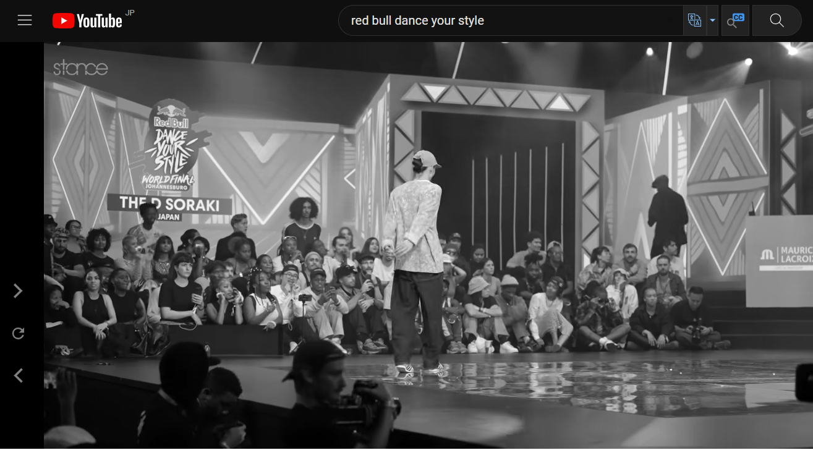

Scroll to Bottom
もうひとつ 趣味ではないですが・・・
RedBull Dance Your Style

久しぶりに心が震えました
人種とか 言葉とか そういうものを超越していて
講義や演習で打ちのめされた心を 奮い立たせてくれました
みなさん 感動してますか （どの立場？）
でも 演習問題解けると 感動しました
話を戻して
③Google Mapの埋め込み
どうでもいいですが かけうどん と ごぼう天 が好きです
最後に
学びの機会を与えてくださった すべての皆様に 大変感謝しております
本当にありがとうございます
0 が 0.1 になったぐらいの成長かもしれませんが
今後も 学び続けていきたいと思います